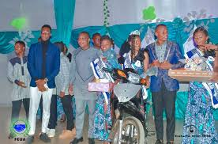

La Nuit de la Femme Scientifique est un événement qui célèbre et met en lumière les contributions essentielles des femmes dans les domaines des sciences instaurée par l'Université Nationale des Sciences et Technologies, Ingénierie Mathématiques (UNSTIM), tout en l'objectif de corriger les inégalités persistantes : les femmes restent sous-représentées dans la recherche, l'ingénierie et les postes à responsabilité, malgré des progrès, afin de mobiliser tous les talents pour relever les défis mondiaux.
Pourquoi une Nuit de la Femme Scientifique ?
Malgré les avancées scientifiques, les femmes restent encore sous-représentées dans plusieurs domaines de la science. La Nuit de la Femme Scientifique a pour objectif de mettre en lumière les contributions des femmes scientifiques, de briser les stéréotypes et de promouvoir l'égalité des chances dans l'éducation scientifique.
Inscrivez-vous pour participer à la Nuit de la Femme Scientifique.
📧 Email : unstim.@gmail.com
🤝 Partenaires : Écoles, universités, ONG